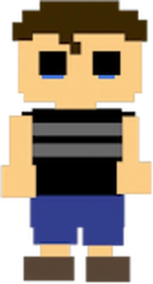

Teoria
Essa teoria propõe que o *Crying Child* de *FNaF 4* é o protagonista dos jogos principais. A criança
teria sobrevivido ao acidente com o Fredbear e continuado a explorar os mistérios dos animatrônicos.

Evidências
- Os eventos de *FNaF 4* sugerem um trauma profundo relacionado ao Pizzaplex.
- Alguns fãs acreditam que o espírito do Garoto Chorão se conecta ao Golden Freddy.
- Os diários no *Security Logbook* sugerem que ele ainda busca respostas após a morte.